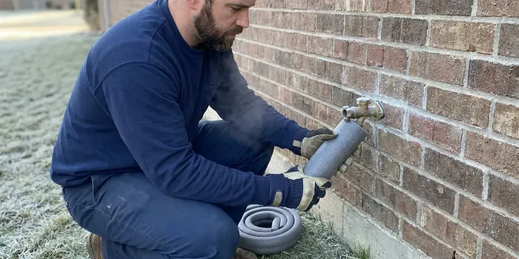

Commercial Plumbing in Cross Lanes, WV
When your business in Cross Lanes, WV needs skilled plumbing care, GJK Plumbing delivers fast and professional solutions. We understand the specific demands of commercial systems.
- Local West Virginia Experts
- Licensed & Insured
- Fast Commercial Service
- Clear Pricing
Need Expert Commercial Plumbing in Cross Lanes, WV?
Contact GJK Plumbing now for reliable, professional service that keeps your business flowing.
Expert Commercial Plumbing Services for Businesses in Cross Lanes, WV
At GJK Plumbing, we provide heavy-duty commercial plumbing solutions designed to meet the rigorous demands of West Virginia businesses in Cross Lanes. From high-capacity water heaters to industrial-grade drain systems, our team ensures your commercial infrastructure functions flawlessly.
Our expertise includes:
- Backflow prevention device testing and repair
- Backflow prevention device installation and testing
- Grease interceptor maintenance and high-pressure hydro jetting of kitchen drains

Additional Plumbing Maintenance Services in Cross Lanes, WV
Our maintenance and specialty plumbing services in Cross Lanes, WV catch small problems before they become emergencies.


Customers
Why Choose GJK Plumbing for Commercial Plumbing in Cross Lanes, WV?
Commercial systems face heavier use and stricter codes than homes. Our plumbers know the equipment, the rules and how to work without disrupting your operation.
- Detailed Records, You get invoices, photos and test reports for every service visit.
- Specialized Tools, Our technicians work with industrial-grade equipment like hydro-jetters and video inspection cameras for thorough commercial diagnostics and repairs.
- Code Compliant, Our work meets commercial plumbing, backflow and health department requirements.
Citywide Coverage
GJK Plumbing proudly serves every commercial district and neighborhood of Cross Lanes, ensuring that no business is left without expert plumbing support. Whether you operate a restaurant downtown or an office park on the outskirts, our team is ready to help.
Experienced Team
Our commercial plumbers have experience with Sloan and Zurn flushometers, Rheem and A.O. Smith commercial water heaters and large-diameter cast iron and PVC drains. Many hold backflow tester credentials.
Safety-First Approach
GJK Plumbing places a high emphasis on code compliance for all commercial plumbing work in Cross Lanes, WV. We ensure that every repair, installation, or maintenance service meets or exceeds current building and health codes to protect your business and its occupants.
Trusted Certified Cross Lanes Plumbing Services Professionals
At GJK Plumbing, we take pride in providing licensed, certified plumbing services throughout Cross Lanes, WV. Backed by leading industry credentials, our experienced plumbers combine technical skill with genuine customer care. Whether it is repair, installation, or maintenance, we follow strict safety and quality standards to deliver long-lasting results you can trust.
Call Us Now PHCC Plumbing Contractor Recognition
PHCC Plumbing Contractor Recognition Better Business Bureau (BBB) Accreditation
Better Business Bureau (BBB) Accreditation Angi Certified Pro
Angi Certified Pro ISO 9001 Quality Management Certification
ISO 9001 Quality Management CertificationReliable Commercial Plumbing Services in Cross Lanes, WV
Emergency Commercial Plumbing in Cross Lanes
A plumbing emergency can stop business operations, leading to lost revenue and potential property damage. GJK Plumbing offers rapid-response emergency commercial plumbing services throughout Cross Lanes, WV. Whether it's a major burst pipe, a severe sewage backup, or a critical water heater failure, our team is equipped to handle urgent situations 24/7. We arrive quickly, assess the problem, and put in place immediate solutions to limit damage and restore functionality, helping your business get back on track with minimal downtime.

Backflow Testing and Repair in Cross Lanes
Most water providers require annual testing of backflow prevention assemblies on commercial properties. We test reduced pressure zone, double check and pressure vacuum breaker assemblies with certified gauges. When a device fails, we rebuild it with manufacturer kits from Watts, Wilkins or Febco. We submit the results to your water provider so you remain in compliance.
Commercial Water Heaters and Boilers in Cross Lanes, WV
Commercial kitchens, gyms and multi-family buildings need large amounts of hot water. We service and install high-input tank water heaters, tankless racks and boiler-fed systems with storage tanks. Testing well water every year or so is a smart habit in West Virginia, especially after flooding or nearby ground disturbance. Mineral scale can build up in these systems fast, so we offer descaling and flushing on a schedule. We also install mixing valves to deliver safe temperatures at handwashing sinks.
Commercial Pipe Repair & Repiping in Cross Lanes, WV
Commercial properties in Cross Lanes, especially older buildings, often face problems with aging plumbing infrastructure, including leaks, corrosion, and burst pipes. We provide expert pipe repair, using durable materials like copper, PEX, and various grades of PVC, suitable for commercial demands. For extensive damage or frequent problems, repiping may be necessary to upgrade your system and prevent future disruptions. Our team can assess your current piping, identify weak points, and recommend the most cost-effective and durable solutions for your business.
Grease Trap Installation & Cleaning in Cross Lanes
Restaurants and food service establishments in Cross Lanes rely on working grease traps to prevent fats, oils, and grease (FOG) from entering the sewer system. GJK Plumbing offers expert grease trap installation, repair, and regular cleaning services. We make sure your grease trap is correctly sized for your business's needs and maintained to comply with local FOG regulations, preventing costly blockages and potential fines from the city.
Slab Leak Detection & Repair for Businesses in Cross Lanes
Slab leaks can be particularly damaging for commercial buildings, especially those built on concrete slab foundations. Basements and crawlspaces are both common in West Virginia homes, and hillside lots often need thoughtful planning for sewer and drain routing. These leaks, often caused by shifting soil or corrosive water, can undermine foundations, lead to mold growth, and cause significant water waste. Our technicians use advanced acoustic and thermal imaging equipment to pinpoint slab leaks without invasive demolition. Once located, we provide efficient repair solutions, often involving re-routing or pipe repair, to protect your commercial property and prevent costly structural damage in Cross Lanes.
Commercial Grease Trap Services in Cross Lanes, WV
Restaurants and food service establishments in Cross Lanes are legally required to maintain functional grease traps to prevent fats, oils, and greases (FOG) from entering the sewer system. GJK Plumbing offers complete grease trap cleaning, repair, and installation services. Regular cleaning is essential to prevent blockages and maintain compliance with local health codes. We also diagnose problems like foul odors, slow drainage, or trap overflow, making sure your kitchen operations run smoothly and avoid costly fines and environmental hazards.

Multi-Family and Property Management Plumbing in Cross Lanes
Apartment complexes and HOAs need a plumber who can handle many units and fast turns. We repair leaks, replace water heaters, clear stacks and repipe buildings while keeping residents informed. Property managers get consistent pricing and detailed invoices for each unit. We also help plan capital projects like building-wide repipes.
Expert Commercial Plumbing Near Me in Cross Lanes, WV
When you search for 'commercial plumbing near me' in Cross Lanes, WV, GJK Plumbing is the trusted local expert ready to serve your business. Our proximity and understanding of local commercial properties mean faster response times and plumbing solutions tailored to the specific challenges faced by businesses in our area. We are committed to being your reliable, nearby commercial plumbing partner.
We know the water providers, inspectors and code requirements that apply to Cross Lanes businesses. That familiarity helps us keep your property compliant. Your operations stay on track.
GJK Plumbing at a Glance
- Licensed and insured plumbers serving Cross Lanes, WV
- 24/7 emergency service with same-day scheduling
- Clear written estimates, no hidden fees
- 4.8-star rated by 832+ West Virginia customers
Cross Lanes Map
Cross Lanes Information
- Population
- 9,727
- Area codes
- Local
- Service area
- Cross Lanes and communities within 40 miles
- Nearby
- Nitro, St. Albans, Dunbar, South Charleston
For businesses in Cross Lanes, WV, dependable commercial plumbing is essential to withstand heavy usage, and our services are designed to address local water conditions and the operational needs of your business.
Expert Services
Trust our professionals for reliable GJK Plumbing solutions in Cross Lanes, WV.
Our Specialized Plumbing Services in Cross Lanes, WV
At GJK Plumbing, we provide a complete range of plumbing services across Cross Lanes, WV. From leak detection to full system installations, our team ensures fast, precise, and affordable service for both residential and commercial properties. Explore our core services below:


How Our Commercial Plumbing Process Works in Cross Lanes, WV
We keep commercial service simple, documented and scheduled around your business.
Request a Quote
Contact GJK Plumbing at (681) 223-3607 to schedule a commercial plumbing service or request an emergency response. We'll gather details about your problem and dispatch a qualified technician to your Cross Lanes business.
On-Site Assessment
Our commercial plumber arrives on time to your business in Cross Lanes, conducting a thorough diagnosis of the plumbing problem using specialized tools. We will clearly explain the problem and propose the most effective solution.
Expert Service
With your approval, our technician will perform the necessary commercial plumbing repairs, installations, or maintenance. We use quality parts and follow industry best practices, delivering lasting results for your Cross Lanes business.
Frequently Asked Questions About Commercial Plumbing in Cross Lanes
Service calls for small commercial repairs often run $200 to $600, and larger projects are quoted individually. Backflow tests typically cost $75 to $175 per device.
GJK Plumbing stands behind the quality of our commercial plumbing work. We offer a solid warranty on all repairs and new installations, typically covering parts and labor for a specific period. Our technician will provide detailed warranty information for your specific service in Cross Lanes.
Yes. GJK Plumbing offers 24/7 emergency commercial plumbing services throughout Cross Lanes to address urgent problems like burst pipes, significant leaks, or overflowing toilets that could seriously impact your business operations. Call us anytime for rapid response.
Many commercial plumbing projects, especially those involving new installations, major replacements, or alterations to the main water or sewer lines, require permits from Cross Lanes's building department. GJK Plumbing will help you work through the permit process and make sure all work complies with local codes and regulations in West Virginia.
Most water providers require annual testing for commercial backflow assemblies. We send you reminders and file the results on your behalf.
GJK Plumbing services and installs all major brands of commercial water heaters common in West Virginia, including AO Smith, Rheem, Bradford White, and State Water Heaters. Our technicians are trained on the latest models and technologies to ensure efficient and reliable hot water for your business.
Slow floor drains, gurgling toilets, sewer odors and repeated backups point to buildup or line damage. A camera inspection shows exactly what is going on.
The frequency of commercial drain cleaning in Cross Lanes depends heavily on the type of business. Restaurants, for example, may need quarterly or even monthly hydro-jetting due to grease accumulation. Office buildings might only require annual cleaning. Preventive maintenance prevents costly emergencies and keeps your business running smoothly.
What People Are Saying About Our Plumbing Experts?

Patricia H.
We had a slab leak that two other companies could not find. GJK Plumbing located it in under an hour, explained our options, and the price matched the quote to the dollar.
Slab Leak Repair · Nitro, WV
James P.
Our commercial plumbing system had a leak under the sink, and GJK Plumbing handled it professionally. The plumbers arrived quickly and restored everything without disruption to our customers.
Commercial Plumbing · Charleston, WV
Laura S.
I scheduled a water heater replacement, and the team made the process smooth and affordable. The new unit works perfectly, and they cleaned up after completing the job.
Water Heater Replacement · Cross Lanes, WV
Daniel K.
A pipe burst at 11 pm and they actually answered. The plumber showed up within the hour, shut everything down, and had us back to normal the next morning. Could not ask for more.
Emergency Plumbing · Dunbar, WV
Mark T.
When our office needed drain cleaning, GJK Plumbing provided quick, reliable service. The plumber arrived on time and made sure every drain flowed perfectly before leaving. Very satisfied.
Drain Cleaning · Cross Lanes, WVRobert G.
The trenchless sewer replacement saved our front yard. They walked us through the camera inspection footage first so we knew exactly what we were paying for.
Sewer Line Replacement · Teays Valley, WV